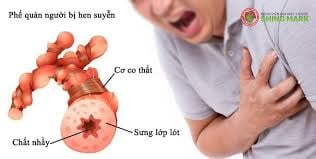

Thông tin bệnh: Bệnh hen suyễn là một loại bệnh mãn tính phổ biến trên toàn thế giới đối với mọi lứa tuổi. Bệnh khiến cho việc chúng ta hô hấp trở nên khó khăn hơn, điều này có thể đi từ ảnh hưởng nhẹ cho tới ảnh hưởng tới tính mạng
Thông tin bệnh: Là một dạng rối loạn di truyền trực tiếp ảnh hưởng tới hemoglobin khiến cho hồng cầu có hình lưỡi liềm thay vì hình cầu. Điều này khiến cho việc di chuyển của hồng cầu trở nên khó hơn.